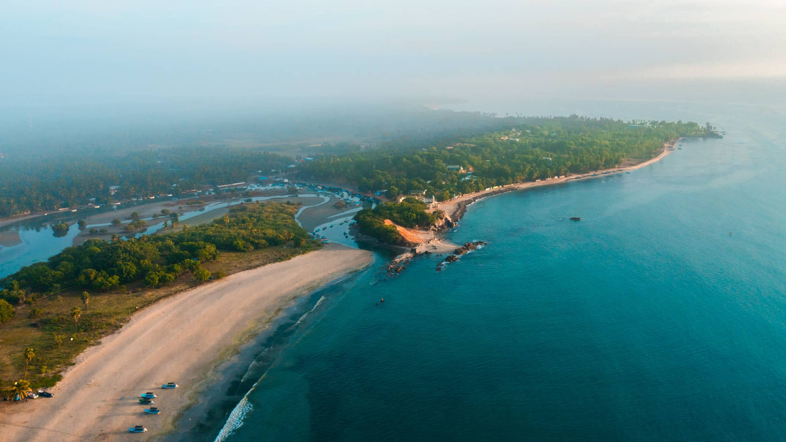

Central Province is famous for its cool climate, lush tea gardens, and scenic hill stations. It's home to Sri Lanka's iconic attractions such as the stunning Nuwara Eliya, the picturesque Kandy, and the lush Horton Plains National Park. A paradise for nature lovers, adventure seekers, and those wanting to escape the heat of the lowlands.
Top 5 Places to Visit
- Nuwara Eliya - Known as "Little England", with its colonial charm and cool climate.
- Kandy - The cultural capital, home to the Temple of the Tooth.
- Horton Plains - Known for the stunning World's End and diverse wildlife.
- Adam's Peak - A sacred mountain with panoramic views of the surrounding landscape.
- Ramboda Falls - A beautiful waterfall located in the heart of the tea plantations.
Top 5 Hotels
- The Grand Hotel, Nuwara Eliya - A charming hotel offering colonial-style accommodation in the heart of Nuwara Eliya.
- Kandy Lake View Hotel - Overlooking Kandy Lake, a relaxing place to stay near the city center.
- Horton Plains Holiday Bungalow - Ideal for nature lovers, located near Horton Plains National Park.
- Tea Factory Hotel - A unique stay in a converted tea factory, offering a vintage experience in the hill country.
- Ramboda Falls Hotel - Nestled amidst tea plantations and waterfalls, a serene getaway in the Central Province.

Nuwara Eliya
Known as "Little England", Nuwara Eliya offers colonial charm and a cool climate perfect for a getaway.

Horton Plains
Visit Horton Plains National Park and enjoy the breathtaking views of the World's End cliff.
Adam's Peak
Ascend the sacred peak for a panoramic view of the island and a spiritual journey.
Eastern Province boasts Sri Lanka's most pristine beaches, bustling markets, and an incredible mix of cultural influences. The tranquil coastline with its golden sands, the historical town of Batticaloa, and the beautiful Trincomalee are some of the highlights in the region.
Top 5 Places to Visit
- Trincomalee - Known for its stunning beaches and vibrant maritime history.
- Passikudah - Famous for its shallow and warm waters, ideal for relaxation.
- Batticaloa - A mix of cultural influences and beautiful lagoons.
- Arugam Bay - A popular destination for surfers and beach lovers.
- Kanniya Hot Springs - A natural hot spring believed to have healing properties.
Top 5 Hotels
- Uga Bay - A luxury resort located on the beautiful Passikudah beach.
- Trinco Blu by Cinnamon - A beachside hotel offering modern amenities and stunning ocean views.
- Amethyst Resort - A serene escape in Trincomalee with all-inclusive services.
- Shakti Vani - An eco-friendly resort near the beach, offering peace and tranquility.
- Sea Lotus Park Hotel - A family-friendly hotel located near the eastern coastline, perfect for a beach getaway.

Trincomalee
Explore the beautiful beaches and historical forts of Trincomalee, a paradise for nature lovers.
Passikudah
Enjoy the clear waters and peaceful atmosphere at Passikudah, perfect for a beach holiday.
Arugam Bay
A world-renowned surf destination with pristine beaches and vibrant nightlife.
North Central Province is home to Sri Lanka's ancient capitals, including Anuradhapura and Polonnaruwa, with numerous archaeological sites and historical monuments.
Top 5 Places to Visit
- Anuradhapura - A UNESCO World Heritage city with ancient Buddhist temples and stupas.
- Sigiriya - An ancient rock fortress and one of Sri Lanka's most iconic landmarks.
- Polonnaruwa - A well-preserved ancient city with Buddhist monuments and ruins.
- Ritigala - An ancient monastery and nature reserve.
- Mihintale - The birthplace of Buddhism in Sri Lanka, with historical ruins and sacred sites.
Top 5 Hotels
- Heritance Kandalama - A luxury hotel located by the Kandalama Lake with eco-friendly design.
- Fresco Water Villa - A charming resort overlooking the tranquil waters of the lake.
- Rajarata Hotel - A perfect base to explore Anuradhapura and its ancient sites.
- Lake View Hotel - A serene getaway near the Anuradhapura Lake.
- Wildlife Resort - A unique experience near the Minneriya National Park, perfect for nature lovers.
Anuradhapura
A historic city with sacred Buddhist sites, ancient temples, and stunning ruins.

Sigiriya
Explore the ancient rock fortress, a UNESCO World Heritage site and one of Sri Lanka's most iconic landmarks.

Polonnaruwa
Visit the UNESCO-listed ancient city, known for its preserved ruins and historical significance.